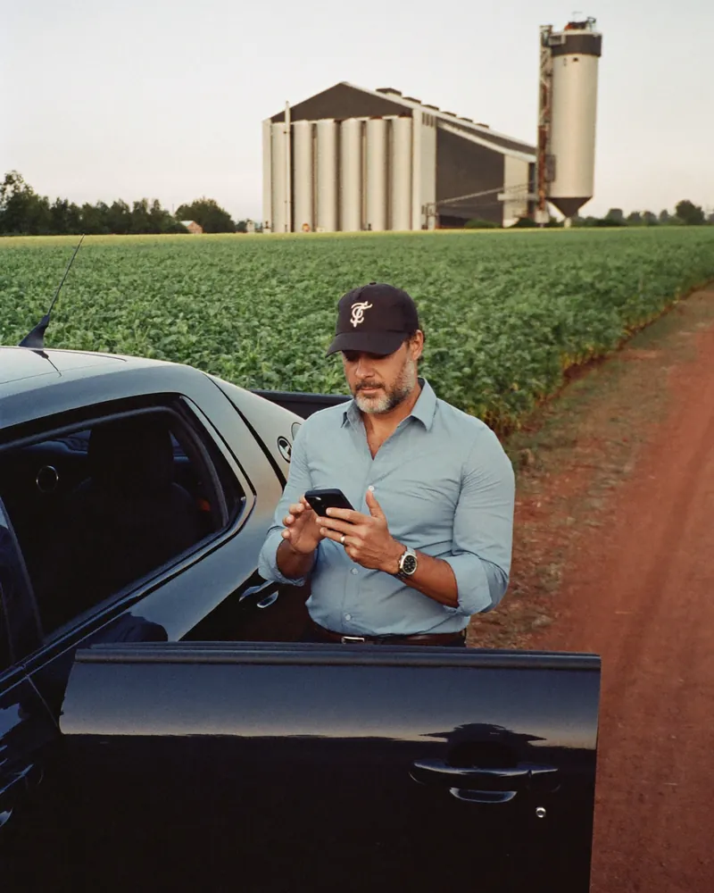
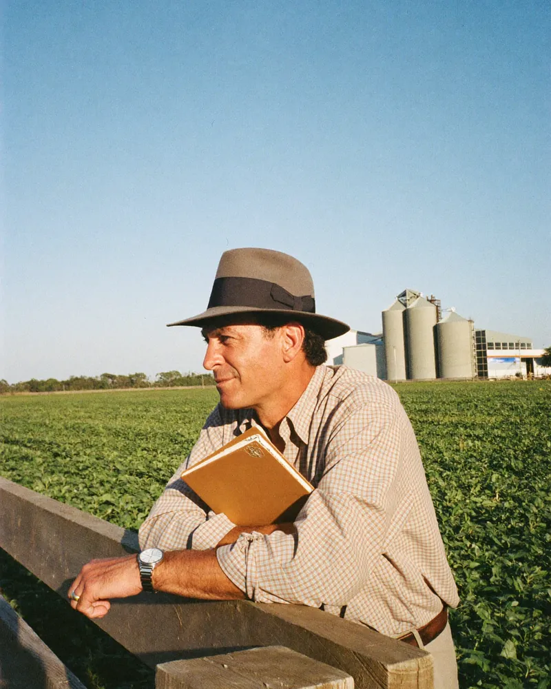
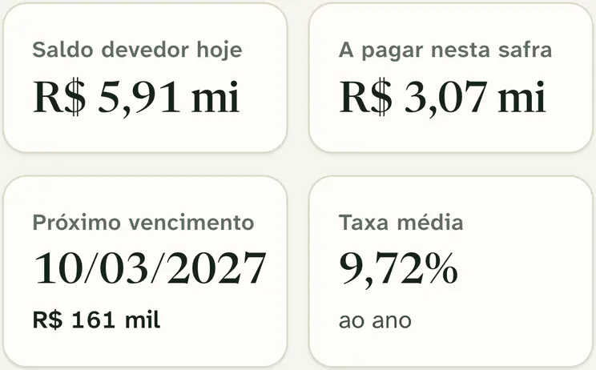
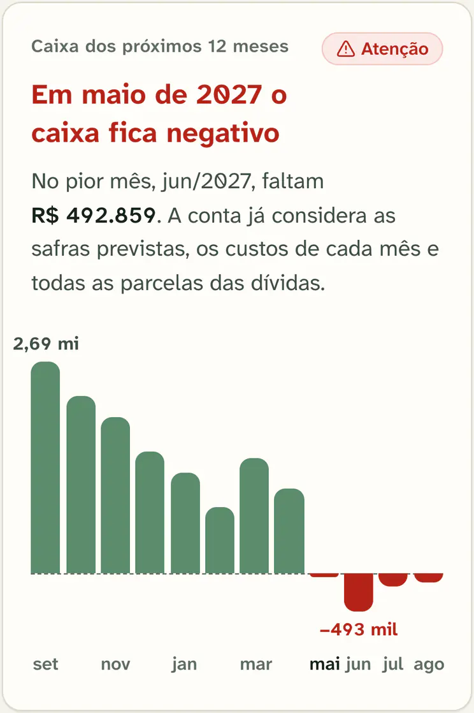
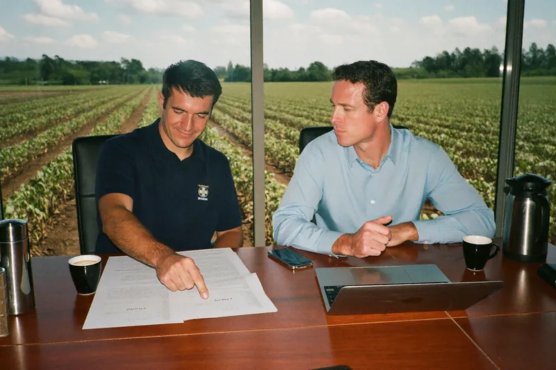
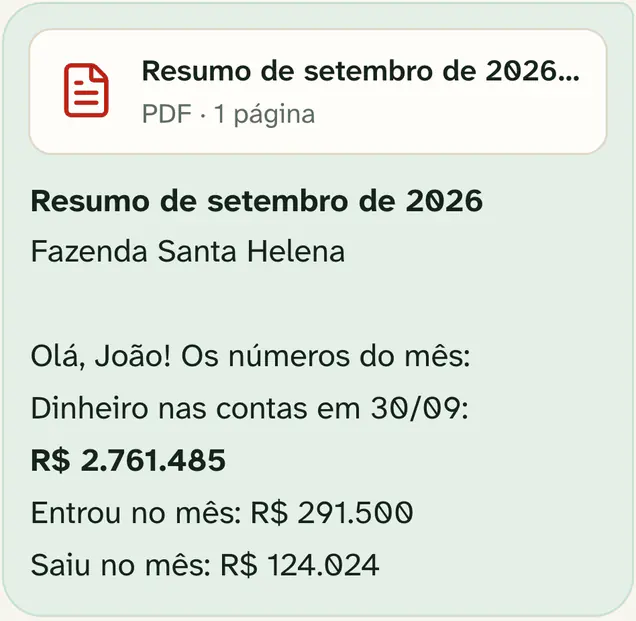
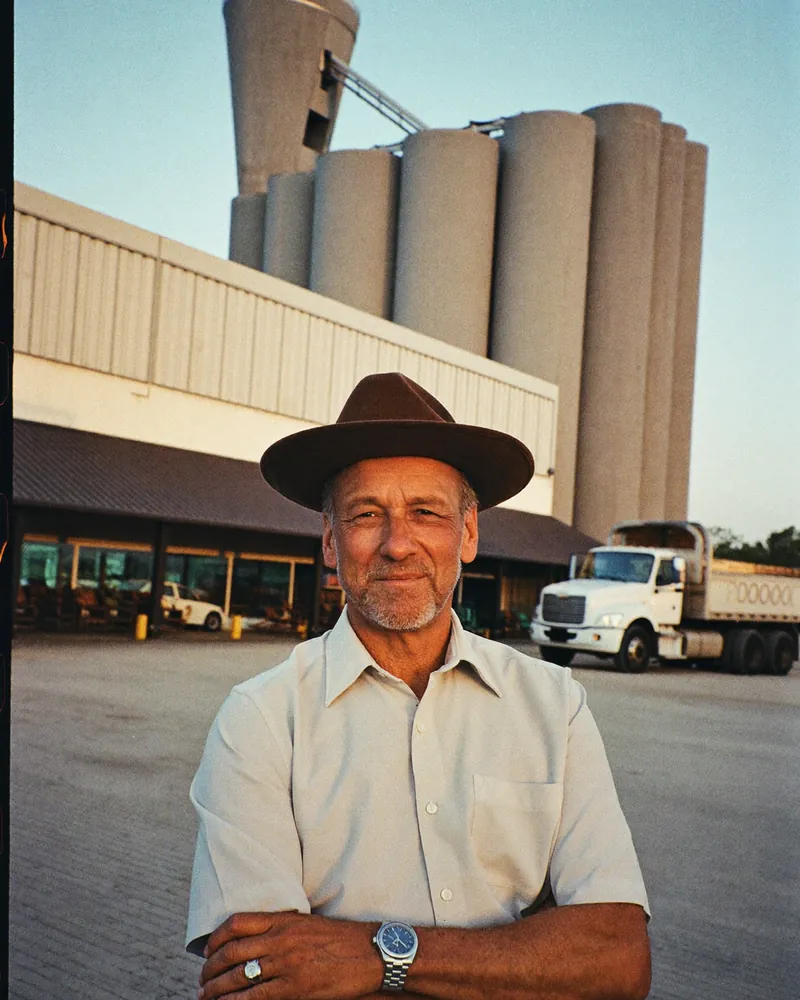
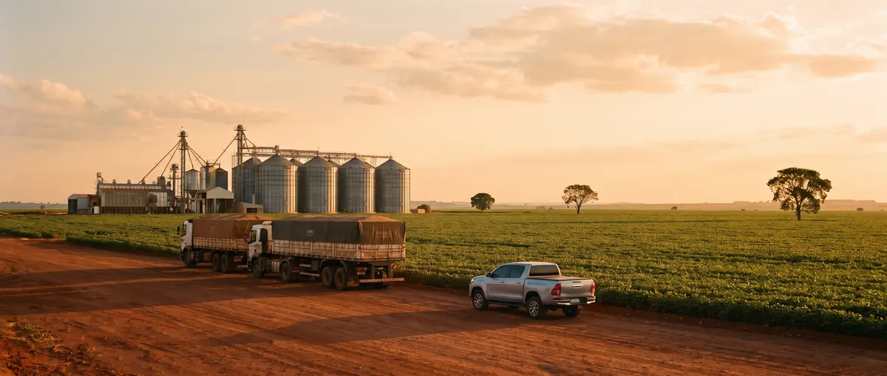

Caixa e dívidas da fazenda, com consultor
Quanto você deve, quando vence e em que mês o caixa aperta.
Custeio, investimento, CPR e renegociação num calendário só, junto com o extrato dos seus bancos. Um consultor confere as contas com você todo mês e avisa antes do aperto.
Falar com um consultorAbre o WhatsApp. A conversa não obriga a nada.
- Acesso ao banco só para ver
- Sem digitar extrato
- Um consultor responsável pela sua fazenda

A conta de cabeça
Alguma destas frases é sua?
Sei mais ou menos quanto devo. O valor certo e o dia de cada parcela, só ligando para o gerente.
Tenho custeio num banco, investimento na cooperativa e CPR com a trading.
Vendi a safra, paguei o que vencia e o dinheiro sumiu. Não sei dizer para onde foi.
Já paguei sistema. Tinha que lançar tudo, ninguém lançava, larguei.
Cada banco mostra só o pedaço dele. Com conta em 3 nomes e em 4 bancos, a conta de cabeça não fecha.

O que você recebe
Quatro coisas que hoje ninguém te entrega juntas
Todas as parcelas, de todos os credores, no dia em que vencem. Banco, cooperativa, trading, revenda.
Com cada parcela dentro e o mês que aperta marcado. Dá para olhar 24 e 36 meses.
Conferido e assinado pelo consultor, com um relatório de uma página em PDF.
Atenção ao caixa, quando um mês fica negativo. Parcelas chegando, 15 dias antes do vencimento.
Dívidas
Todas as dívidas num calendário só
Cada contrato entra com todas as parcelas, principal e juros, no dia em que vencem. Banco, cooperativa, trading ou revenda. No seu CPF, no de alguém da família ou no CNPJ da empresa.
O aplicativo lê na cédula em PDF o valor, a taxa, o prazo, a carência e as parcelas, e monta o cronograma. O que ele leu com pouca certeza fica marcado com “Confira”. A dívida só entra no calendário e no caixa depois que o consultor confere com você.
O consultor cadastra à mão, contrato por contrato.


Caixa
Você vê o mês que aperta antes de ele chegar
O aviso, como aparece no aplicativoMaio de 2027: o caixa fica negativo. No pior mês, junho, faltam R$ 492.859.
O aplicativo projeta o caixa dos próximos 12 meses, com cada parcela dentro. Se fica negativo, você vê em que mês e quanto falta no pior mês. Dá para olhar 24 e 36 meses também.
Quando a projeção mostra um mês negativo.
O que vence nos próximos 15 dias, o total e o dinheiro nas contas.
Os dois avisos chegam no seu WhatsApp, assinados pelo consultor. Com o aviso na mão, você tem mais tempo para negociar prazo, antecipar venda ou buscar crédito.
É projeção. A receita esperada e o custo de cada mês, você combina com o consultor. Custeio que você ainda não contratou fica fora da conta.
Como começa
3 passos, sem digitar extrato
Caderno e sistema param no dia em que ninguém anota. Aqui o extrato vem do banco, e quem confere é o consultor, contrato por contrato, do seu lado.

- 1Você manda as cédulas
O consultor confere com você o calendário das dívidas, contrato por contrato.
- 2Você autoriza os bancos
Cada titular autoriza a própria conta no aplicativo do banco, com o consultor ao lado: você, quem mais da família tem conta e quem assina pela empresa. O acesso é só para ver.
- 3O consultor acompanha todo mês
Ele confere o extrato, fecha o mês e manda o resumo no seu WhatsApp. Se o caixa for apertar, avisa antes.
O aplicativo é a ferramenta do consultor. Você e quem cuida da papelada da fazenda também podem entrar, no celular ou no computador. Se preferir não abrir, o resumo chega do mesmo jeito.
Todo mês
O consultor confere e manda o resumo
O aplicativo sugere o que é cada movimentação: semente, adubo, diesel, mão de obra, parcela. O que ele não reconhece fica marcado para o consultor decidir. Só o consultor fecha o mês.
Com o mês conferido, o resumo chega assinado no seu WhatsApp, com um relatório de uma página em PDF. Dá para imprimir ou mandar para o contador.

O consultor mostra o aplicativo com dados de demonstração.
Segurança
O acesso ao seu banco é só para ver
O acesso é pelo Open Finance, o sistema regulado pelo Banco Central. Com ele, você compartilha os dados do seu banco com quem você autorizar.
- Você autoriza dentro do aplicativo ou do site do seu próprio banco. Antes de confirmar, o banco mostra quais dados vai compartilhar, com quem e até quando.
- Com a autorização, ninguém paga, transfere nem contrata nada em seu nome. O aplicativo usa o extrato, o saldo e a fatura do cartão.
- Você cancela quando quiser, no aplicativo do seu banco, e o extrato para de chegar.
Sim. O seu consultor e a nossa equipe veem extrato, saldo e fatura das contas que você autorizou: é assim que eles conferem o seu mês. A empresa que faz a ligação com o banco também recebe esses dados. Outro produtor não enxerga nada seu.
Antes de você autorizar, o consultor explica cada tela e avisa o nome da empresa que vai aparecer no banco recebendo os dados. Ninguém da nossa equipe pede a senha do seu banco nem o código que chega no seu celular, por mensagem ou por ligação.
O extrato chega de cada banco que a família autorizou, do Pix do diesel ao débito da parcela do custeio. Transferência entre as contas não vira receita nem despesa, e o gasto da casa fica fora do custo da fazenda.
Antes de chamar
Para quem é, e para quem não é

É para quem
- Toca a fazenda com crédito rural: custeio, investimento, CPR, renegociação.
- Tem conta em mais de um banco, ou em mais de um nome da família.
- Quer saber o mês que aperta antes de ele chegar, sem lançar extrato.
- Grão, gado, café, leite: o caixa fica separado por atividade.
Não é para quem
- Só quer anotar gasto. Para isso existe coisa mais simples.
- Procura sistema de lavoura, estoque, nota fiscal ou imposto.
- Procura empréstimo. A Tulhia não é banco e não empresta dinheiro.
- Quer só o aplicativo. Hoje a Tulhia vem sempre com consultor.
Perguntas
Antes da primeira conversa
Estou no meio de uma renegociação. Serve para mim?
Serve. A renegociação entra como um contrato, com a carência, os juros da carência e cada parcela no seu dia. A partir daí ela conta no caixa. A conversa com o banco continua sua, com o número na mão.
É só para quem está com parcela atrasada?
Não. É para quem está em dia e quer continuar assim. E para quem já atrasou parcela e precisa do número certo para conversar com o banco.
Meu banco entra?
Depende do banco. Na primeira conversa o consultor olha os seus, um por um. Conta de banco que não entra fica fora do caixa. Dívida com trading, revenda ou banco de máquina entra pelo contrato, mesmo sem extrato.
Não sei mexer em aplicativo.
No dia a dia, não precisa. O resumo do mês e os avisos chegam no seu WhatsApp, com um relatório de uma página. Para autorizar a conta, o consultor faz o passo a passo junto com cada titular, que confirma no aplicativo do próprio banco.
Quem é o consultor?
Uma pessoa da nossa equipe que acompanha a sua fazenda mês a mês. Cada fazenda tem um consultor responsável: ele confere e fecha o seu mês, e assina o resumo. Na primeira conversa você já fala com um consultor.
Meu contador já faz isso.
O contador cuida do imposto e do que já passou. O consultor olha para frente: o que vence e em que mês o caixa aperta. Um não tira o lugar do outro, e o relatório do mês pode ir para o contador.
Quanto custa?
A Tulhia é um acompanhamento com consultor, com o aplicativo junto. O valor você fica sabendo na primeira conversa, antes de assumir qualquer compromisso.
E se eu quiser sair?
A autorização do banco é sua. Você cancela no aplicativo do banco quando quiser, e o extrato para de chegar. As condições do contrato você recebe por escrito antes de assinar.

Primeira conversa
Converse com um consultor antes de decidir
- Você conta quais contratos tem, com quem e quando vencem, do jeito que lembra.
- O consultor mostra como a Tulhia funciona, com dados de demonstração.
- Você sai sabendo o que entra no seu caso, quanto custa e qual é o primeiro passo.
Abre o WhatsApp. A conversa não obriga a nada.